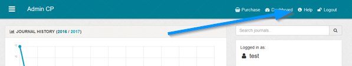

Sometimes with new software its hard to know where to get started. This is a list of the basic operations to get your system up and running as quickly
as possible. Please look at each section carefully, thank you.
Note: For any page in admin, click the 'Help' link at the top of the page for information about the page you are on.
